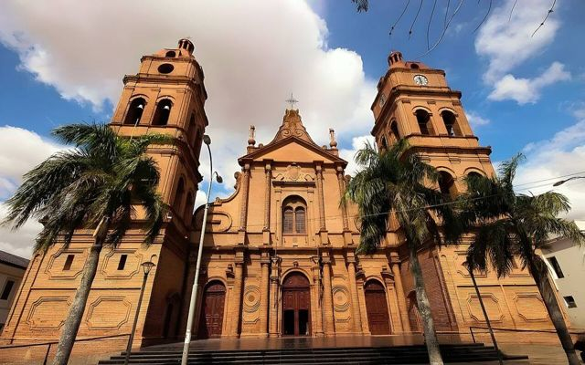
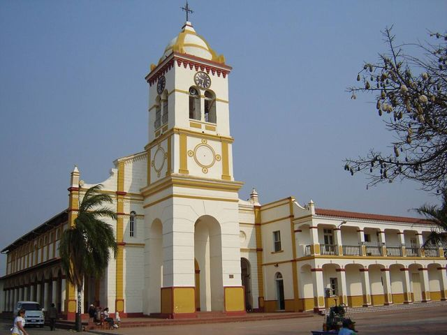
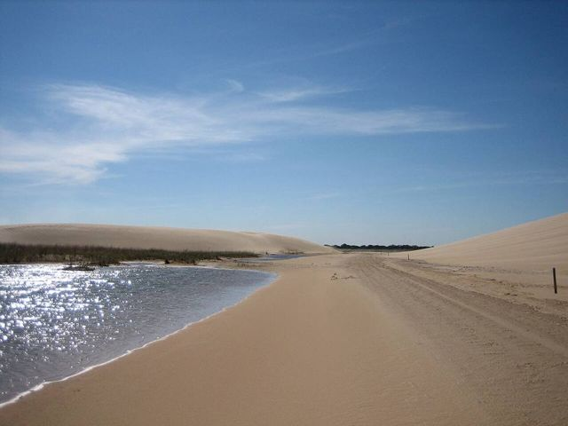
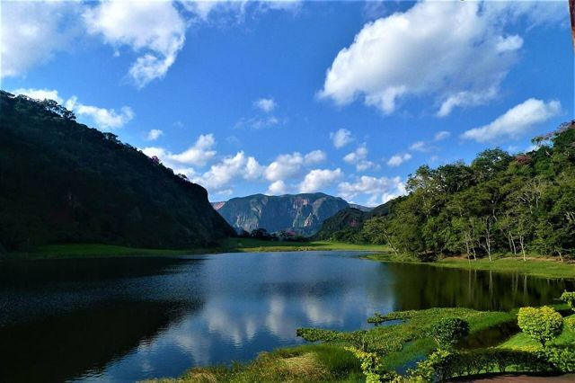
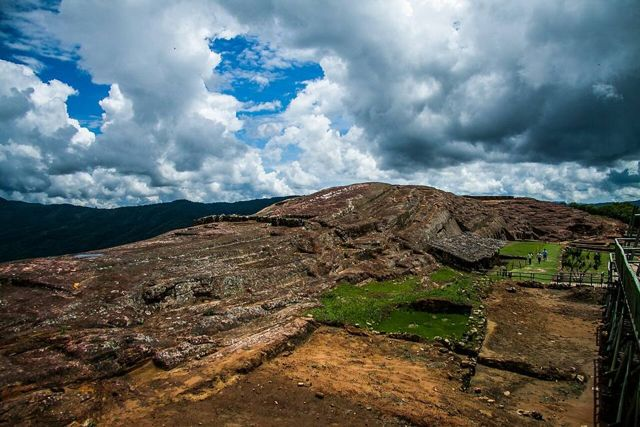
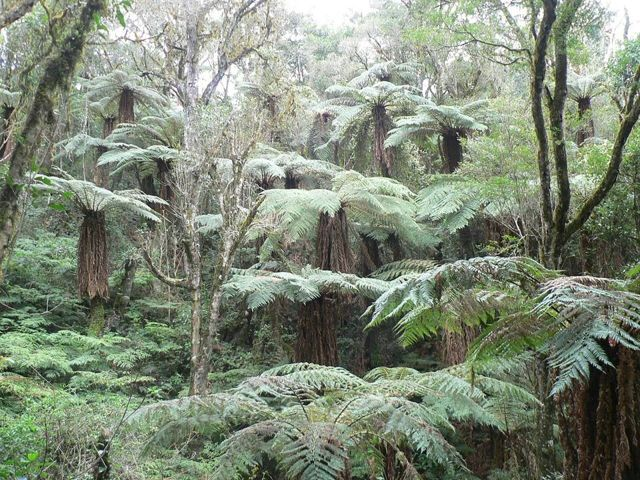
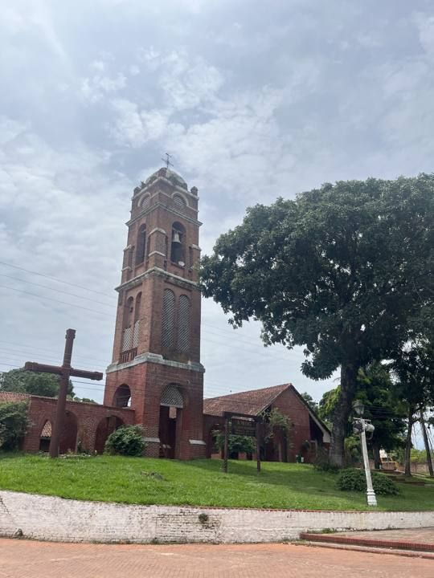
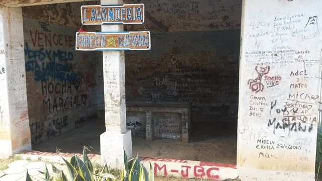
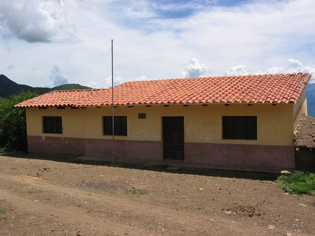

Espejillos
Département de Santa Cruz · Nature et randonnée
À Espejillos, la rivière coule sur de grandes dalles de roche lisses, formant des toboggans naturels, des piscines claires et des petites cascades, au milieu de la forêt. C'est l'escapade de week-end favorite des gens de Santa Cruz, à moins de deux heures de la ville.
600 maltitude
0 à 1 joursur place
À faire
- Baignade dans les piscines naturelles
- Cascades et toboggans de roche
- Pique-nique au bord de la rivière
À goûter
- MajaditoRiz cuisiné avec du charque ou du poulet, servi avec un œuf au plat et de la banane frite. Le plat de Santa Cruz et du Beni.
- Fruits tropicauxMangues, ananas, papayes, achachairú (petit fruit acidulé) et jus frais partout pour quelques bolivianos.
Conseil. La piste finale se fait mieux en 4x4. Beaucoup de monde le week-end : en semaine, c'est bien plus calme.
Comment aller à Espejillos
Santa Cruz Tour en 4x4 ou excursion · 1 h 30 à 2 h
Voiture ou tour en 4x4 : la piste finale est difficile.
Autres lieux de la région

Santa Cruz de la SierraLa grande ville tropicale et moderne de l'Orient, aéroport international (Viru Viru).
CotocaLe sanctuaire de la Vierge de Cotoca et ses potiers, à 20 km de Santa Cruz.
Lomas de ArenaDunes de sable blanc et lagunes au sud de Santa Cruz.
Laguna VolcánUn lac caché au fond d'un cirque de montagnes couvertes de forêt.
SamaipataVillage bohème entre Andes et forêt : El Fuerte (UNESCO) et le parc Amboró.
Parc national AmboróForêts de nuages et de fougères arborescentes, très riche en oiseaux.
Buena Vista (Amboró nord)Petit village au pied du parc Amboró, côté forêt tropicale : rivières, oiseaux et café.
VallegrandePetite ville coloniale de montagne, au cœur de la Route du Che.
La HigueraLe hameau où le Che a été exécuté en 1967, devenu lieu de mémoire.